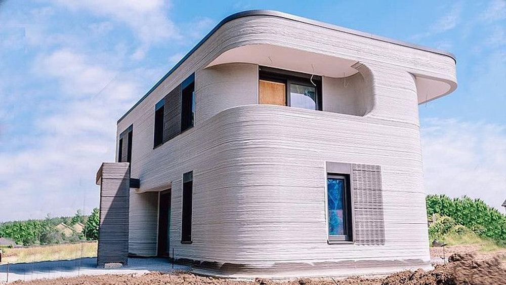
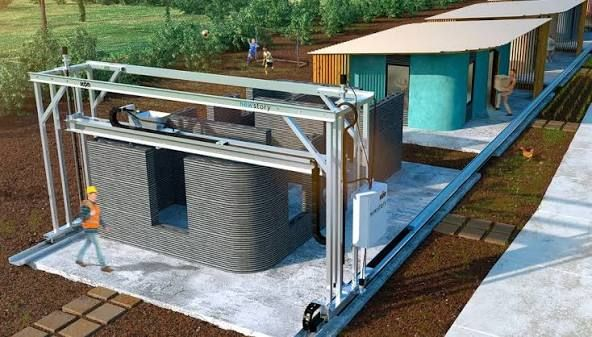

Типовые дома
Площадь, планировка, этажность, состав проекта, требования к участку и возможность адаптации к 3D-печати.
Раздел предназначен для каталога типовых проектов, индивидуальных решений и документированных примеров строительства.




Площадь, планировка, этажность, состав проекта, требования к участку и возможность адаптации к 3D-печати.
Запрос на архитектурную разработку и согласование технологических ограничений.
Фотографии, регион, подрядчик, оборудование, состав работ, дата и подтверждающие материалы.
Оставьте параметры объекта — запросим индивидуальное предложение.